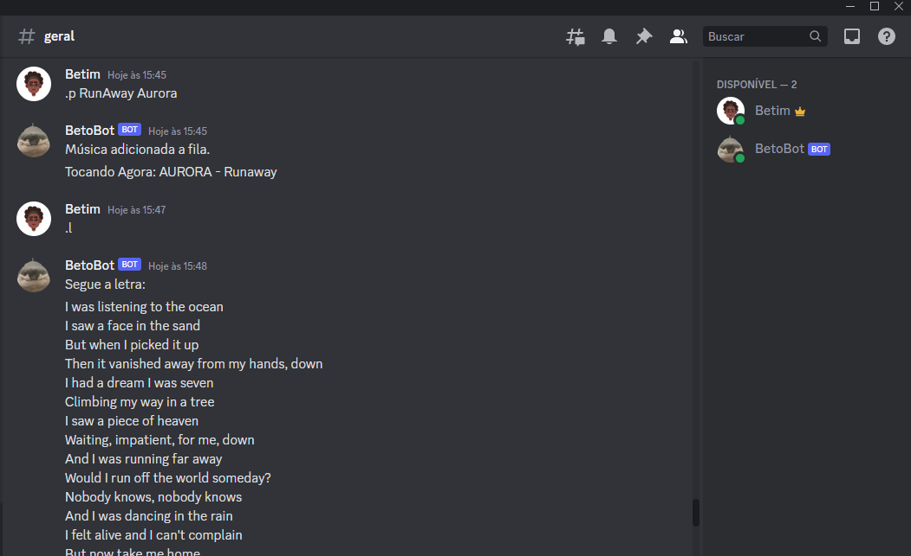

This is a discord music bot made in Phyton, it was one of my first projects in this language.
When playing with my friends, we started to feel that the current discord bot's weren't supplying our
necessities.
So i decided to made one myself, it can get songs directly from youtube and even show the lyrics when needed.
Beto Bot

- link
- favorite